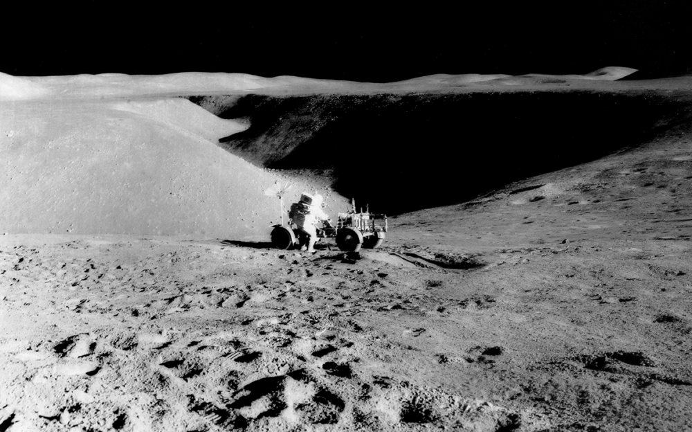
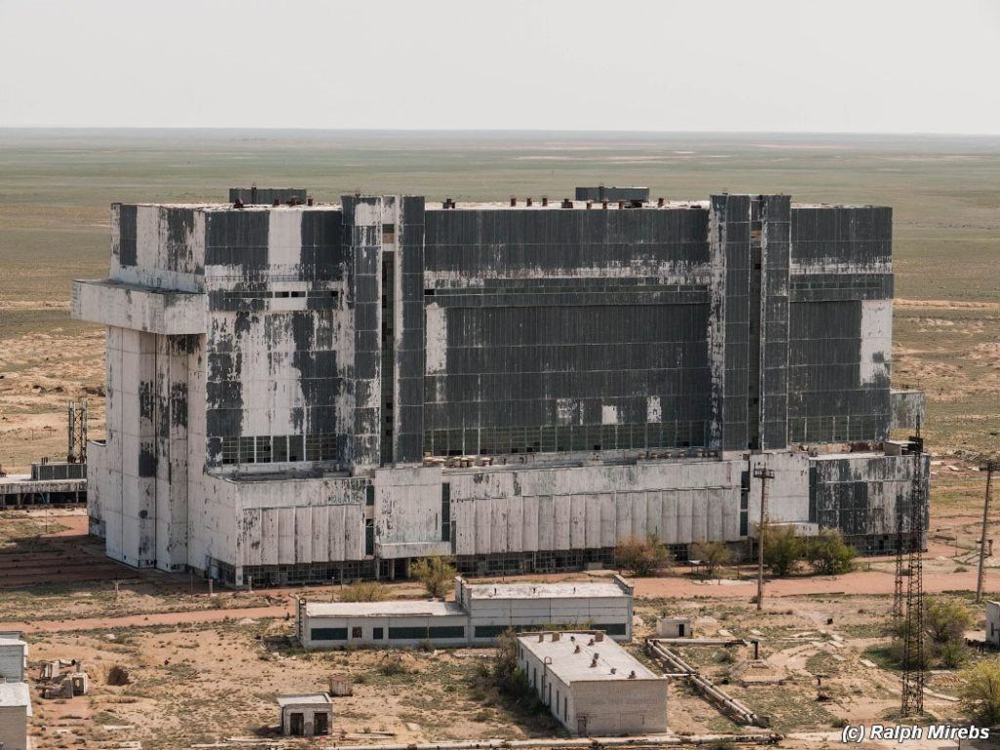
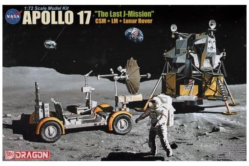
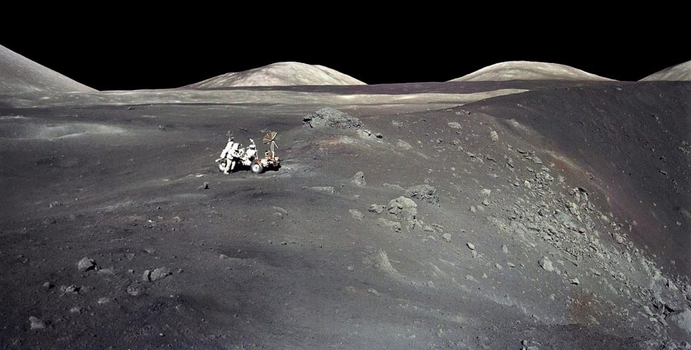
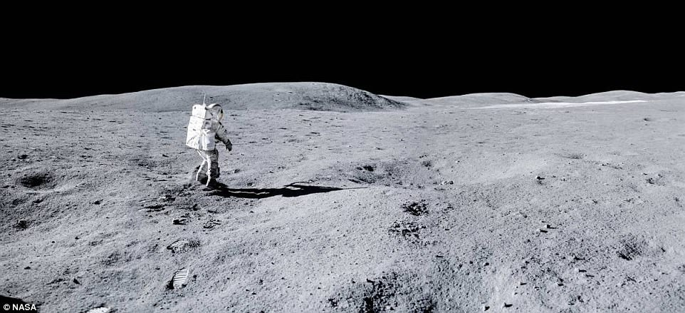
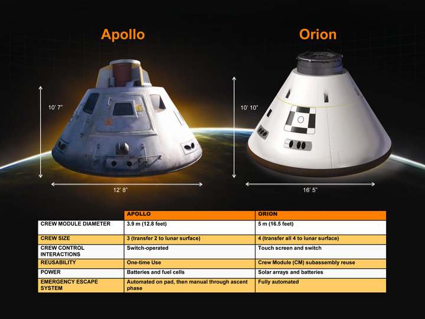
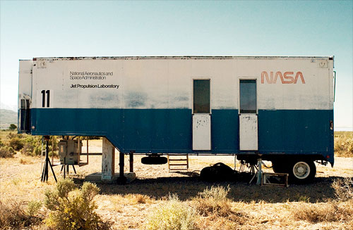
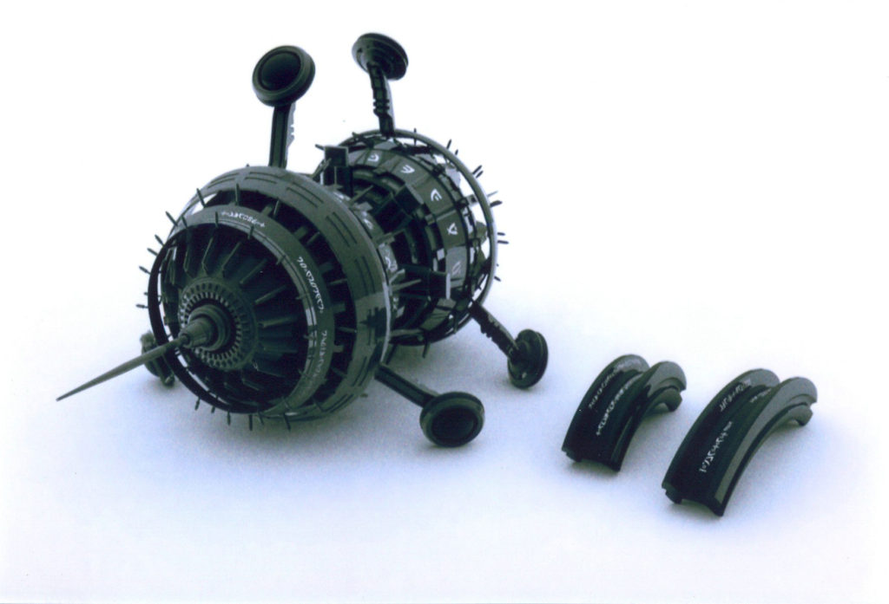
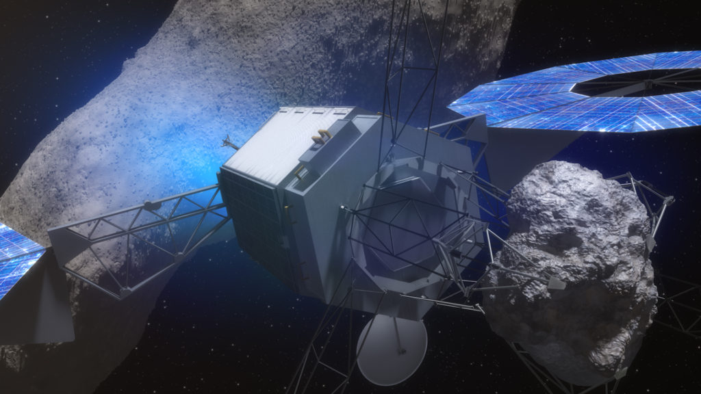

This post is a little rant that I composed after President Obama announced that he would redirect NASA funds towards Muslim “outreach”. I dusted it off, and updated it, and placed it herein as a launch board to my discussion on the realities of space exploration in the age of the “fourth turning”.
"When I became the Nasa administrator, he (Mr Obama) charged me with three things. One, he wanted me to help re-inspire children to want to get into science and math; (secondly) he wanted me to expand our international relationships; and third, and perhaps foremost, he wanted me to find a way to reach out to the Muslim world and engage much more with dominantly Muslim nations to help them feel good about their historic contribution to science, math, and engineering." -Head of NASA, Charles Bolden.
That’s pretty bad.
NASA went from exploring space, and expanding our understanding of the universe, to becoming a political tool. It became a tool that would [1] pipe money to teacher’s unions, [2] be used to funnel money into the UN, and three [3] funnel money into Muslim nations.
But that wasn’t what I was so worked up about. What got me so riled up was the reaction that my various friends had to the announcement. In their minds, there was no benefit for humans in the exploration of space.
No benefit.
They parroted the public narrative that NASA is the sole and only mechanism for the exploration of space. They parroted the narrative that humans are only intelligent life in our universe, and that if there were anything of value in “outer space” that the government would truthfully announce it to the population…
I dusted this rant off, and posted it herein with revisions. Presented with the introductory comments and for reader enjoyment.
Introduction
“If the US does not stop their imperialist campaign to destroy our economy and keeps mingling in our affairs with China, we will be forced to reveal the truth about their secret moon program,… … These classified documents will expose the campaign of delusion and lies the US government has played on behalf of the American people and the rest of the world for the past 60 years,” -The supreme leader of the Democratic People’s Republic of Korea, Kim Jong-un
Let’s look at this question for a minute…
All during the decade of the 1960’s America was geared toward space exploration. Every magazine, every article, every book was written about space exploration. Those of us whom lived through this period remember it well. Most of the television programs revolved around space exploration, and how one needs to study hard to become a scientist.
As a much older and experienced man, I see now how this was manipulation on a grand scale. Through the media, through the magazines, through the movies, through the television, and through the educational system, Americans were programmed to study, excel and advance towards space exploration and conquest.
Everything was directed and focused to this end. Everything.
Don’t believe me? Then, go through the archives of Scientific American, National geographic, Life magazine, Mechanics Illustrated, Science Illustrated and other period literature of that time period.
Yes. You need to do some research. You need to scan the old magazines and the articles and advertisements in their pages. You need to dust off old National Geographic and Life magazines. You need to go through old Boy’s Life magazines and go through all the magazines that were popular during the 1960’s.
Do your research.
Not on the Internet, that is a blackboard that is constantly being erased and rewritten. No. Instead, go into the old used book stores and read the actual paper tomes that lie there… forgotten and covered in dust.
Since the early 1970’s United States manned space exploration beyond the upper atmosphere abruptly ended. It came to a complete stop. The programs were shut down. Everything ended. Engineers were laid off. Blueprints were archived or discarded. Equipment was sold and auctioned off. Program managers were reassigned, and all manned space exploration beyond low-orbit ended. It all stopped. No one planned further manned space adventures and all the funding went towards more pressing concerns at that time; roads, bridges and infrastructure.
Apollo ran from 1961 to 1972, and was supported by the two-man Gemini program which ran concurrently with it from 1962 to 1966. Gemini missions developed some of the space travel techniques that were necessary for the success of the Apollo missions. Apollo used Saturn family rockets as launch vehicles. Apollo / Saturn vehicles were also used for an Apollo Applications Program which consisted of three Skylab space station missions in 1973–74.
Except that it didn’t go there. It did not end there.

What happened?
The money just disappeared. It vanished! Poof! Gone! No bridge construction was funded. No new parks were created. No large-scale public works, dams, and projects occurred. Go ahead. Do your research. 1974 through 1977. Where were all the social public projects? You know, the ones that supposedly got all the funding that was transferred out from NASA?
The money didn’t go there. It went secretive. The funding went black.
Not only did America mothball and disassemble it’s space infrastructure, but the media support for space exploration evaporated. The number of television shows regarding spacemen and their adventures dropped to near zero. (Replaced by social situation comedies like Julia, and Three’s Company, and the Mod Squad.) Everything suddenly came to an end. It all ended.
- Billions of dollars in investment… gone.
- Thousands of very talented engineers, designers, and scientists laid off and unemployed.
- Already completed spacecraft… discarded and scrapped out.
- Large facilities, buildings, roads, bridges, and related infrastructure abandoned.
It is equivalent to a family spending their hard-earned money on a new swimming pool. Then completing the pool, filling it with water. Giving everyone swimming lessons. Then just when the first person decides to take a dive off the diving board… they drain the water. They padlock the gates, and tell all the neighbors that they no longer have a desire to swim.
If you were a neighbor, wouldn’t you think it was just a little strange, if not outright suspicious?

What was the real story? What really happened?
If Facebook suddenly closed its doors and went off line, wouldn’t it be natural to ask why? What if it was Google, or Microsoft? NASA’s space exploration program in the early 1970’s was just that enormous, huge and well known.
Yet no one questioned the government’s excuses. At least no one that was provided a media voice. Indeed, the media suppressed all stories that questioned what was going on. In fact, if memory serves me right, they actually made fun of the laid off engineers who now, broken and unemployed couldn’t find work.
At that time it was easy to control the people. The government controlled most of the popular media. They could manipulate the population quite easily and readily.
Now consider what has happened in the last fifty years.
How have we, as a species, advanced in the last half of a century? Sure, we have computers, social media, and fast food. However, how have we grown as a species? Have we improved our habitat? Have we expanded outwards to new and interesting directions?
The only thing that the United States can show is trillions of dollars in a series of endless wars and conflicts, the need to tax Americans more and more, and a severely dumbed down population.

What really happened?
Do you really believe that really happened?
That one minute we were on the verge of colonizing another planet, then suddenly everyone started to realize that we had no business in space at all. That suddenly manned space exploration must end. Money must be saved. Robots must be used.
That out of the blue we stopped everything.
It all came to a screeching halt. The rocket-ships, already made and ready for launch at their rocket pads, had to be torn down and sold for scrap. You actually believe that?

Do you believe that there was no further interest in space exploration at all? Are you trying to convince me that what the media tells us, and what the public budgets say is all true. That the ONLY benefit of manned space exploration is for propaganda and public relations purposes to further a geo-political agenda? That the programs were too expensive to maintain for mere political purposes. (That is the official line right now. Don’t believe me? Goggle it!) Moreover, you actually believe that?
The costs for just one aircraft carrier exceed $12.9 billion dollars. (USS Gerald R. Ford, first in its class of warships, cost $13 billion with a total program cost of and additional $37.3 billion. Total cost is around $50 billion.) The budget for NASA at the time of building this carrier (2005) was $15 billion. This was around one third the cost of just one aircraft carrier. Consider comparative costs. The argument for having a base on the moon is that NASA's budget would double. Indeed, to maintain a manned presence on the moon would be a mere fraction of the cost of one of our many, many, many aircraft carriers. The reader should consider the costs of other programs to put things into perspective. The argument that there is no money to fund manned lunar exploration is nonsense. The USA as of 2016 had 12 aircraft carrier battle groups. (10 in use, 2 in reserve, and three in construction. As of 2016. This does not include the smaller, and more numerous, helicopter carriers.) Each one over $50 billion dollars in real costs plus operational costs for the battle group. Not to mention all the aircraft, manpower and supplies. The numbers do not add up. The accounting does not match the official pronouncements out of Washington, D.C...
The need to maintain a strong military is not the issue. The issue is whether we can sustain a military empire at the expense of scientific exploration. We need to really question the official narrative.

As now, as the veil is falling from the swamp that exists in Washington, D.C., we can truly see the massive crime, fraud and corruption that festers there.
Here is the official narrative that we have come to be convinced of…
“The levels of federal spending which NASA had received before 1966 had become untenable to a public which had become financially wary, particularly as they experienced a major oil crisis in 1973, which shifted the nation’s priorities." -Andrew Liptak excerpt from “The Real Story Of Apollo 17... And Why We Never Went Back To The Moon”
Not true. Here is just another example of the rewriting of history. The Apollo space program was amazingly popular at the time. Read the newspapers from that time period. The termination of the program came as a shock to most Americans.
The reader should recognize that there was absolutely NO homegrown swelling of anti-space movements during the 1970’s. There were no campaigns against manned space exploration. The congressional offices were not flooded with letter campaigns demanding it be shut down.
The decision to abate the space exploration efforts were driven top down.
"Spending in space was something that could be done, but with far more fiscal constraints than ever before, limiting NASA to research and scientific missions in the coming years. Such programs included the development of the Skylab program in 1973, and the Space Shuttle program, as well as a number of robotic probes and satellites.” -Andrew Liptak excerpt from “The Real Story Of Apollo 17... And Why We Never Went Back To The Moon”
Parroting the official Democrat party platform, no doubt. That, space exploration should be limited to near-earth observation for climate change, a focus on robotic missions, and termination of all manned exploration. This was done in favor of greatly expanded social programs and “blue ribbon” investigative panels.
Think people.
If this fellow is correct then, if fiscal realities are really the cause, then why did President Obama GIVE AWAY $7 billion to South Africa without any benefit to America? Wouldn’t he have saved it to help Americans? After all, it is our money. Seven billion dollars is one half of the entire NASA budget. Then he…
- Why did he give away $1.7 billion to Iran?
- Why did he toss $9.2 billion to the UN, just “because”?
- Why did Obama give a sum of $220 million to the Palestinians?
- Why did he throw a big chunk of $3 billion to a “climate fund“?
- Why did he gave $1.5 billion to the Muslim Brotherhood?
Come on! This has had nothing to do with “fiscal realities”. Rather it has to do with something else. Do not piss on my leg and tell me it is raining.

The Official Narrative
Do you really think that the United States [1] finds no military advantage in space; either strategic or tactical?
All one need do is read the military literature on strategy. Here’s a typical example; “…what you can create is something like an air defense bubble; and one of the lessons the Chinese have taken away from the wars of the past twenty years – Desert Shield, Desert Storm, the Balkans, Afghanistan – is that air superiority is essential to winning modern wars.”. You also need to understand our technical limitations... For instance, aside from launching an ICBM or SLBM, as these rockets do travel through low earth orbit to reach their assigned targets.
Do you really and honestly believe that the government [2] finds no technical or manufacturing advantage in space? Really is that what you believe? Do you honestly tell me [3] that the military sees absolutely no advantage in interplanetary capable transports.
Do you believe that the military sees no advantage in [4] weapon delivery systems and [5] high technology outside the gravity well? Do you think that the military did not [6] employ everything in their ability to study the moon, and understand any mysterious objects discovered there?
Ah…
The mysteries of the moon.
So many mysteries.
"At the same time the last (public) manned Lunar Mission was leaving the Moon, a man named Ingo Swann was having a secret meeting with a group of scientists at Stanford Research Institute in Menlo Park, California. He had written to the researchers with a proposal to study a new discipline called Parapsychology.
Swann successfully demonstrated his own abilities at locating objects at a distance and describing them with uncanny accuracy -- a talent we now know as Remote Viewing. As the research continued they discovered an unusual phenomenon that remains a mystery -- the ability of Remote Viewers to "see" a location when supplied their geographic coordinates (latitude and longitude). The ability is remarkable even when the viewer has no knowledge of navigation or familiarity with the location. Ingo Swann seemed to be very good at this and was utilized by the CIA to describe certain secret locations inside the Soviet Union. In his book, Penetration, Ingo Swann described how he was asked by the government to remote view some coordinates on the Moon in 1975. After Swann had attained his mental state, the assistant Axel was told to say the word, "Moon", followed by the coordinates and he would then describe what he saw. After mentally "landing" on the Moon, at a precise coordinate, Ingo described a pattern he saw in the sand. What they actually look like are like rows of largish tractor tread marks. But I don't understand how this could be, so they must be something I don't understand. They are just marks of some kind. Strange, though. He was then directed to the next set of coordinates... but something seemed wrong. I'm sorry, Axel, I seem to have gotten back to Earth here... Well, there are ... some ... I have no idea. But whatever it was it couldn't be on the Moon. After a coffee break of about fifteen minutes, Ingo and Alex got back to the task of remote viewing the Moon. Alex gave the coordinates and Igor began to describe what he saw. Well I am in a place which is sort of down, like a crater I suppose. There is this strange green haze, like a light of some kind. Beyond that, all around is dark though. I am wondering where the light is coming from ..." Ingo suddenly jolted and wanted to stop. Alex asked him, "What else?" Well, you won't like this, I guess. I see, or at least I think I see, well... some actual lights. They are giving off a green light... I see two rows of them... yes, sort of like lights at football arenas, high up, banks of them. Up on towers of some kind... Well, Axel, I can't be on the Moon. I guess I have to apologize, I seem to be getting somewhere here on Earth. After being reassured that his viewing was indeed on the Moon, Ingo considered that he was being asked to remote view a Russian base of some kind and that they had established an outpost on the Moon ahead of America. He was asked to continue and given the coordinates again. There is a noise of some kind, like a thumping. I can see one of the light towers better now. Hey, it seems built of some very narrow struts of some kind, thin like pencils. Like some sort of pre-fab stuff right out of Buckminster Fuller's stuff. Let's see... hey, there are some of those tractor-tread marks everywhere. If I guess these are about a foot wide, well then, let's see, if I compute as correctly as I can, well... Well, tall -- about or let's say over a hundred feet. But?... Well, I got a glimpse of the crater's edge. On it I think I saw a very large tower, very high that is. Big, really big! Well if I compare it to something I am familiar with in New York, about as high as the Secretariat building at the United Nations -- which has thirty-nine floors in it. Ingo was then told that what he saw was real but that it was neither made by the Russians nor the United States. Without saying who made these structures, Ingo understood. Shocked, he asked for a break for the day before resuming the session the next morning. Again he was given coordinates and was asked to make sketches of what he saw. He described a mining operation with domes and tubes, bridges, nets and what looked like houses. In one house he saw a kind of people. I saw some kind of people busy at work on something I could not figure out. The place was dark. The air was filled with fine dust, and there was some kind of illumination -- like a dark lime-green fog or mist. The thing about them was that they either were human or looked exactly like us -- but they were all males, as I could well see since they were all butt-ass naked. I had absolutely no idea why. They seemed to be digging into a hillside or a cliff. They must have some way of creating a good environment, warm and with air in it. But why would they be going around naked? Ingo then had a strong feeling of fear. He wanted to run away. One of the humanoids he was viewing had looked in his direction, as if he had sensed that he was being watched. I think they have spotted me, Axel. They were pointing at me I think. How could they do that... unless... they have some kind of high psychic perceptions, too? At this point, Axel told Ingo to stop the session, saying that he didn't want to put him at any risk. Obviously, whoever these beings were, they were not friendly. This is why we have not been back to the Moon.
So, what is it? Choose one. [A] That we have discovered extraterrestrials on the moon, or [B] that we discovered that there was no benefit in exploring space? What is the answer?
Is it “A” or “B”?
Are you trying to tell me that our concerns are only related to what is defined by the borders of our country and it has nothing to do with spaceflight? (Especially with what we know about the CIA, NSA and other agencies of the American military state seem to be directed at both international and domestic objects of interest.) Do you really believe that?
The Costs of Secrecy
One of the problems with such absolute secrecy that is maintained in government black-budget programs is that everything is questioned, and real purposes are often doubted. I myself, often find myself questioning the motives of the United States government.
Here is an example of what happens when there are so many secret programs that one can’t tell what is valid and what is not.
In an anonymous email, the whistle-blower claimed that 67P/Churyumov-Gerasimenko wasn’t a comet at all but something from which NASA started receiving signals 20 years earlier. NASA scientists had noted that the comet seemed to be performing the impossible feat of changing trajectory in space by itself. The ESA scientific mission was merely a smoke screen for a military reconnaissance mission by American and European governments to find out what was going on.
The email explained the whistle-blower’s logic: “Do not think for ONE MOMENT that a space agency would suddenly decide to spend billions of dollars to build and send a spacecraft on a 12-year journey to simply take some close-up images of a randomly picked out comet floating in space.”
Consider the numerous examples. For instance, in 1962, Secretary of Defense Robert Mcnamara authorized Project 112 (Project SHAD) involving years-long testing of chemical and biological weapons on unsuspecting civilians and American military personnel.
This was done in secret without consulting or informing President Kennedy.
Until 1998 the DoD (Department of Defense) denied the existence of Project-SHAD therefore test subjects who survived were unable to claim disability payments for health issues suffered as a result of the project.
Today, the project remains classified.
Do you really believe that for almost 50 years since we walked on the moon, that the government and the military had concluded that space exploration has no advantage at all? This is either from either a military, tactical, or political standpoint?
Next Generation Spacecraft Design
Can you really expect me to believe that the development of space technology is so slow that it takes 20 years to develop a replacement for Apollo? A spacecraft that started from absolute zero to putting men on the moon within nine years.
On January 14, 2004, U.S. President George W. Bush announced the Crew Exploration Vehicle (CEV) as part of the Vision for Space Exploration. The CEV was partly a reaction to the Space Shuttle Columbia accident. The CEV effectively replaced the conceptual Orbital Space Plane (OSP), which was proposed after the cancellation of the Lockheed Martin X-33 program to produce a replacement for the space shuttle. This CEV eventually evolved through redirection of NASA under President Obama (on October 11, 2010, the Constellation program was cancelled by President Obama) and the crewed vehicle became the Orion MPCV. The ORION MPCV was formally announced by NASA on May 24, 2011. The first mission to carry astronauts is not expected to take place until 2023 at the earliest. With functional missions to begin from one to three years later. 19 + 1 = 20 years.
The replacement is called the Orion. It is a four man crewed spaceship that is an identical clone to the three man Apollo spacecraft that was developed from scratch in less than nine years over 40 years ago.
Orion Multi-Purpose Crew Vehicle (MPCV) is a planned, beyond-low Earth orbit (LEO) manned spacecraft that is being built by Lockheed Martin for NASA, and Airbus Defense and Space for the European Space Agency for crewed missions to the Moon, asteroids and Mars. It is planned to be launched by the Space Launch System. Each Orion spacecraft is projected to carry a crew of 0–6 astronauts, though the expected crew manifest is to be limited to four; that is one person larger than the Apollo space craft.
Keep in mind that the Apollo spacecraft was designed nearly 50 years ago using very primitive technology and manufacturing processes. No CAD systems were used, nor hand held calculators, let alone computers. It was done using slide rules and drafting tables. They didn’t even have copying machines back then.
Not everyone feels positive about NASA’s human spaceflight program during Obama’s presidency, but there are very few who offer unqualified praise for the president.
The truth is that he just never really showed much interest in space.
While Obama did propose bold changes early on to NASA, seeking to more closely align the agency’s goals to severely reduced funding levels, the Democrat controlled Congress objected and the president retreated almost immediately. He did not fight it. Instead, he focused in what Congress demanded, an expansion of social programs and an increase in taxes.
He chose to invest his limited political capital in other areas, effectively ceding most power over NASA’s human spaceflight programs to a Congress largely driven by parochial interests. And when an agency needs a unified purpose and the means to achieve it, this is rarely a formula for success.
Slow NPD
Why is the development of space technology so slow?
We went from sliderules & crude computers to handheld iPads with full media capability in less than 30 years. But we couldn’t do that for oxygen regeneration systems, transport systems or communication as well? Do you honestly believe that?
No matter how you look at things, and what you might believe, the following is undeniably true.
In the early 1970’s there were sudden [1] substantial and profound changes in the direction of space technology as perceived by the public. [2] All manned space exploration efforts came to a complete stop, with only [3] small public relations projects observed. (Apollo-Soyuz and the NASA Skylab.)
Is there any question concerning this first three points? Do you, the reader disagree with them? (Pause. Think about it. Think really hard.)
The Black Project Explosion
Now, not well reported on was another truth.
Because at that same time, there was an [4] explosion of black-project funding. (This is undeniably true.) The black-projects were such that there were [5] no detailed congressional oversight, and no true and real accounting processes in place.
It should be painfully obvious to anyone who looks at these curious facts objectively that indeed something must have happened at that time. The truth be known; it is obvious. With the closure of all public space exploration efforts, came an explosion of black-budget efforts of unknown scope and value.
But what happened?
Certainly if something big had occurred there would be people who would be talking about it. There would be some evidence of something strange or unusual. But we just can’t seem to find any evidence.
No magazine articles were written about this. No true and real disclosures except for a mere handful were exposed. Not a peep came from anywhere. For decades the public was lulled to sleep. The public no longer focused on the sciences and technology but in more trivial matters; matters that the media can control.
When America left the moon, we turned our backs on Space.
NASA was redirected by President Carter to conduct some low earth orbit activities. He continued to finance the Space-Lab, but at a “life support” level, and killed it the very first chance he got. The Space-Lab fell to the ground after the orbit decayed and Carter payed Australia for the bother to clean up the debris left scattered all over the Australian desert.
We focused on “Earth Shoes”, social justice, empowering women, and a reality that had television commercials singing “We are the World”. Space exploration was of no great importance. We needed to enact clean air legislation, clean water legislation, and healthy food legislation. We needed legislation, and lot’s of it! STAT!
All of which would be managed by the federal government. Yessur! They will just tax the people more to support these great ideals. Universities were given generous grants and funding to prove “global cooling”. Then they were given more money to prove “global warming”. All the time, the most popular singers in the nation were paid to sing their hearts out “for the world”.
It was a non-stop liberal love-fest. All paid for by YOUR tax dollars.
Instead of looking outward, we started to look at the world where we lived. At that time, the government told us that they could fix everything. All we needed to do was hand over all our money and let them do all the work.
We could trust them, don’t you know.
With the continuous prodding of the media, we did so. Taxes were raised on working class. Unable to save, they started using credit. When the industries failed, so did many families as well. The result, was an economic decline of enormous proportions.
From the ashes of that ruin arose President Ronald Reagan.
But, through all this turmoil and change, one fact remains. We left space. We shut down all of our ambitious space exploration efforts. We shut everything down. Doors were closed, then padlocked, and abandoned completely.
We laid off the scientists and engineers.
In the process the “best and the brightest” that took humans to the moon lost their jobs and their careers. They were forced to work as “bag boys” in grocery chains, or flipping burgers in fast food restaurants. many lost their families as well. Their skills were used and discarded. Their contributions forgotten.
There are no statues for these heroes that made the moon missions possible. There are no television documentaries regarding them. All is quiet.
Yet, we do give Al Gore millions of dollars and a prize for a Powerpoint presentation on “Global Warming” . Or was it “Global Cooling”? The excuse for taking our money away has swung back and forth so many times, I just can’t keep up with the narrative.
Obama received millions, and a prize for…being a negro while being a President. No friggin’ shit. And the crew of idiots who gave him that award not only regretted it, but lost their jobs in the process. What a bunch of globalist activists…
In our world-line, the fox runs the hen-house. The fox is interested in eating the hens, and has no interest in anything other than that. Space be damned. There are no hens there!
The NASA Space Exploration Today

The Orion spacecraft is an identical design to that of the Apollo spacecraft. It is slightly larger and uses the latest state-of-the-art technology, but the basic major components are unchanged. It is still launched using a rocket with a gantry; it is not reusable, it still uses the same kinds of maneuvering thrusters, and the same kind of life support systems.
This is the replacement for the Space Shuttle; a reusable space plane that could be used to ferry things into orbit. It was replaced with this; a throw-away expensive one-shot clone of a nearly 50 year old design.
Why was the space shuttle retired without a (reusable) replacement, and why is this costly inefficient design the most advanced system that NASA can come up with? Why?
For those of you readers who do not agree with me; consider this argument. Is the United States government actually being truthful? Is the dialog and narrative from the President, and the rest of the political appointees truthful? Do you actually trust the United States government?
When President Obama opens his mouth and tells you that unemployment is in the lowest levels in a century, and that Americans have never seen such prosperity, that you believe him?
Do you really believe that those who are now running things have your best interests at heart? Do you really believe that the space program and NASA is real and used for the betterment of United States technology? Or is it just a colorful “smoke screen” designed to give the illusion of space exploration, when the actual programs (the hidden and secret programs) are much more robust and well-funded. Do you really believe that the United States government would never lie to the American people? Hah? That the United States government would ever lie to Congress or the American people?
“I have documents showing that the CIA invented the whole thing (Global Warming).. Global Warming was invented to both scare people, and divert their attention from other human-made dangers like nuclear weapons. The CIA gave millions of dollars to any scientist who would confirm the theory, so many unscrupulous scientists did what they were told in order to get the money. Now, there is so much fake data to confirm that Global Warming “exists”, that they actually convinced everyone that it was real.” - Edward Snowden
I will tell you why this is the case. I will tell you why everything is so quiet; why it is so dark and silent. I will explain to you why there is an elephant in your living room, and why no one recognizes what it is doing there. I will tell you, but you won’t like the answer.
What happened

What happened should be obvious to the reader now. Sometime during the late 1960’s and into the middle of the 1970’s there was a change in direction regarding space exploration. The public aspect of space travel was converted to a much scaled down federal program. While the non-public aspect of space travel went deep black.
“The secret of freedom lies in educating people, whereas the secret of tyranny is in keeping them ignorant.” -Maximilien Robespierre
When the “dust settled”, President Jimmy Carter left the White House, and President Ronald Reagan took office. He immediately increased funding for BOTH the “white” (the public) efforts in space exploration and the “black” efforts in space exploration.
The “white” projects are well known. They include the “Freedom Space Station”, which was later scaled down and internationalized by Democrat President Bill Clinton. As well as the Space Shuttle program. (Later killed off by George Bush.). Not to mention, space-based laser research, the MX missile program, and next-generation spacecraft such as the X-30 NASP.

Consider that in 1960, a report entitled “Proposed Studies on the Implications of Peaceful Space Activities for Human Affairs” was prepared for NASA by the Brookings Research Institute.
The report contained a section entitled “Implications Of A Discovery Of Extraterrestrial Life” which was a 190-page report resulting from a one-year study which concluded that public knowledge of life on other planets could potentially cause the collapse of our civilization or, at least, cause profound changes.
Perhaps this, and other reasons, contributed towards stuffing all manned flight and technology research regarding extraterrestrials into the deep black.
The “black” programs are NOT well known. They are either completed, in process, or are being redeveloped into other efforts. I am not authorized, nor qualified to comment on them. Except to say that C.A.R.E.T. is a pretty good example of the work that was going on.
Of course… you all do realize that it was just a (wink, wink) internet hoax? Don’t ya know. Nothing to see here. Heh, heh.

All programs that deal with extraterrestrials fall under the MAJestic jurisdictional umbrella. These are black programs, with all technologies that require “hands on” work regulated to deep-black carve outs.
In the case of the Dragonfly Drones, ‘they’ (agencies unknown and those protecting the truth of the drone presence here on Earth) went to a whole heap of trouble in their discrediting efforts. This involved creating and releasing multiple hoaxed CGI drone videos which were extremely unconvincing. They went to the trouble of setting up websites to try and convince a now intrigued public that the drones were just a marketing stunt or an outright hoax. ‘They’ also heavily utilised the services of bought and paid for trolls whose job it was to create confusion by interlacing the story with more falsehoods and layers of misdirection. These trolls have been, and still are, embedded deep within the UFO subculture. They operate within forums, blogs, social media as well as the traditional print media, radio and television. They conduct counter-intelligence efforts using every available avenue. These targeted and sustained campaigns to obfuscate the truth have been going on for a long long time and no doubt some of the perpetrators of spin have created a veil of respectability within their own sphere of influence such that they would never be accused of perpetrating disinformation. -Truthfall
Some Insight
According to recent polling data, also suspect, the vast majority (over 80%) of Americans believes that the United States knows about extraterrestrials but is refusing to tell the American people about what they know.
Let’s go back to the middle 1960’s. Say around the time of the 1964 New York World’s Fair. At this time, the Beatles singing group was very popular. We were in Vietnam trying to “save it from communism”, and “It’s a small world after all” was a big hit all over America. We were looking at the world as a small place that needed unity through the United Nations. We were looking towards moving off this planet and establishing colonies on other worlds, with the moon as a first step.
Now, suppose, just suppose, that [1] some type of contact was made between one or two key extraterrestrial species operating within our sphere of influence. Further suppose, that [2] over time, a relationship developed in which they laid out some very basic ground rules;
- Earth is permitted to be occupied by humans.
- Space is the realm of our extraterrestrial benefactors.
This did not happen overnight. In fact, the initial relationship that was established in the 1960's had been cultivated after over a decade of contact in various forms. An organization, that was set up back in the late 1940's, became the only point of contact with these extraterrestrial creatures. This organization, otherwise known as MAJestic, had been very active during the 1950's. They had used reverse-engineered radar systems obtained from Operation "Paperclip" to de-cloak and disable the operational parameters of extraterrestrial vehicles. The wreckage and crew were then acquired and studied. Eventually culminating in negotiations and understandings between MAJestic and one of the key extraterrestrial species.
In this relationship, all space flight is monitored, and eventually controlled by MAJestic. That is out of necessity, as MAJestic is the organization that liaises with our extraterrestrial friends.
More Complications
Of course things are never that simple.
The more we got to know our new-found extraterrestrial friends, the more we learned. What we discovered was not what we really wanted to hear.
- There were many, many extraterrestrial species all around us.
- Our world, wasn’t really “ours”, it was “theirs”.
- Our planet is a “sentience nursery”; a protectorate, a special preserve.
- We are not the first species to evolve in this nursery, nor will we be the last.
- Those extraterrestrials that monitor and police this nursery have been doing so for many, many, many years.
- Those extraterrestrials are far more scientifically advanced than we could even hope to understand.
As such, certain deals and arrangements were worked out. The details of which can be found elsewhere and are considered contentious anyways. For now, let’s just keep everything really simple.
- An agreement was reached.
- We would support the policing and monitoring of this planet by working with the species assigned to this task.
- This species is well known in conspiracy circles. They are known as “the greys”, or “the Pleiadians”, though they are neither grey nor from that particular solar system.
- In exchange they would allow us to reverse engineer certain technologies.
Thus we have a system whereas humans participate in assisting of the biological monitoring of this planet. This might help explain such things as “abductions”, “cattle mutilation”, and similar events. And we have a situation whereas carve-outs operate within MAJestic in regards to technology and advanced sciences.
Even more complications
But, you know, things are not ever so simple. To begin with…
There are more than one species that is involved in this planet. While the “greys” might be involved in monitoring and policing this sentience nursery, other species have other purposes here. In fact, if I may be so bold, there is an arrangement where the “greys” work under the supervision or “understanding” of a much more powerful, and older species.
This older species is quite different in appearance. It is an invertebrate species. It also perceives our reality quite differently than we humans do.
- While the “greys” police and monitor this reality…
- This other species is involved in the construction of the reality that we inhabit.
- They can move in and out of our reality as easily as we go up and down stairs.
- They can also move in and out of other realities, such as “Heaven” at will.
- Their science is the science of soul.
- Their understanding involves MWI integration.
Which of course is why I am involved in this disclosure in the first place. And, is why, my role was so important, but impossible for most humans to understand. (Sigh.)
Summary & Conclusions
Black Programs
There are elements within the United States that are active in reverse engineering technologies given to us by our extraterrestrial benefactors. There are also elements involved in sentience evolution of humans. All elements and members fall under MAJestic purview. These people, and the organization operate as carve-outs and are not part of the United States government.
White Programs
The United States government, instead, has it’s own space exploration program known as NASA. Currently, they are trying to duplicate 1960’s technology that was given up in the 1970’s. Since then, NASA has been re-purposed for robotic earth monitoring, and Muslim outreach. If current projections hold up, NASA might be able to have a clone of the Apollo spacecraft called Orion. This might happen in a little over a decade.
The big talk while Obama was President was to use the Orion spacecraft to go next to a chunk of rock in space the size of a dishwasher. Then move it to earth orbit where it can be studied. Woo woo!

Take Aways
- All American led space exploration came to an end in the 1970’s.
- This was the result of direct contact with an extraterrestrial species.
- From that moment on, all “actual” space exploration efforts went deep-black.
- NASA was cut down in size to keep public perception intact.
- Today, we have two space programs. They are a very active black program, and a token white (public) program.
- MAJestic is the organization that handles all issues regarding extraterrestrials.
FAQ
Q: Why is the black side of space exploration kept secret?
A: It is kept secret for numerous reasons.
- If it was out in the open and public, the United States government would try to gain control of it. That is unacceptable as the government would twist it and distort it into something different and dangerous. You see what Obama did to NASA, imagine if he had the power of teleportation, dimensional switching, MWI, invisibility, and space travel…
- Other reasons include the fundamental need to keep humans ignorant of our situation and our place in the universe AT THIS TIME. Sentience growth is something that humans need to work out independently of any extraterrestrial intervention of knowledge. This is an extraterrestrial requirement.
- The reverse engineering of technology is a national security issue, and there are many nations who would do whatever was possible to obtain access to some of the technologies that are locked within the confines and understanding of MAJestic.
Q: Why are you so critical of the Orion spacecraft?
A: The old-fashioned rocket ship design of the 1960’s was long ago determined to be unfeasible for active exploration of space. Instead other systems were devised, of which the Space Shuttle was but one. These solutions all worked towards the idea of making space affordable to humans. Orion does in the exact opposite direction. It is a disposable vehicle that is so expensive that it is often a unique and custom device for single-purpose use.
Q: Will man ever go to other planets other than the moon?
A: What gives you the idea that we haven’t yet? What gives you the idea that we don’t have other methods of transport aside from spacecraft? What gives you these assumptions?
MAJestic Related Posts – Training
These are posts and articles that revolve around how I was recruited for MAJestic and my training. Also discussed is the nature of secret programs. I really do not know why the organization was kept so secret. It really wasn’t because of any kind of military concern, and the technologies were way too involved for any kind of information transfer. The only conclusion that I can come to is that we were obligated to maintain secrecy at the behalf of our extraterrestrial benefactors.


MAJestic Related Posts – Our Universe
These particular posts are concerned about the universe that we are all part of. Being entangled as I was, and involved in the crazy things that I was, I was given some insight. This insight wasn’t anything super special. Rather it offered me perception along with advantage. Here, I try to impart some of that knowledge through discussion.
Enjoy.


MAJestic Related Posts – World-Line Travel
These posts are related to “reality slides”. Other more common terms are “world-line travel”, or the MWI. What people fail to grasp is that when a person has the ability to slide into a different reality (pass into a different world-line), they are able to “touch” Heaven to some extent. Here are posts that cover this topic.


John Titor Related Posts
Another person, collectively known by the identity of “John Titor” claimed to utilize world-line (MWI egress) travel to collect artifacts from the past. He is an interesting subject to discuss. Here we have multiple posts in this regard.
They are;